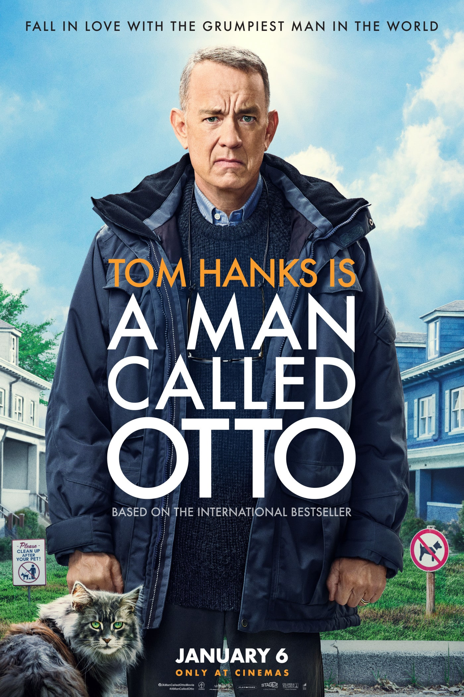
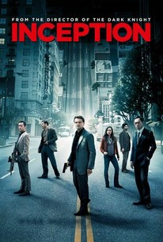

| A man called Otto |
 |
Otto is a grump who's given up on life following the loss of his wife and wants to end it all. When a young family moves in nearby, he meets his match in quick-witted Marisol, leading to a friendship that will turn his world around. |
| Inception |
 |
A thief who steals corporate secrets through the use of dream-sharing technology is given the inverse task of planting an idea into the mind of a C.E.O., but his tragic past may doom the project and his team to disaster. |
| The Social Network |
.jpg) |
As Harvard student Mark Zuckerberg creates the social networking site that would become known as Facebook, he is sued by the twins who claimed he stole their idea and by the co-founder who was later squeezed out of the business. |
| The Grand Budapest Hotel |
|
A writer encounters the owner of an aging high-class hotel, who tells him of his early years serving as a lobby boy in the hotel's glorious years under an exceptional concierge. |
| Interstellar |
 |
A team of explorers travel through a wormhole in space in an attempt to ensure humanity's survival. |
| The wolf of wall street |
 |
Based on the true story of Jordan Belfort, from his rise to a wealthy stock-broker living the high life to his fall involving crime, corruption and the federal government. |
| Despicable me |
 |
When Gru, the world's most super-bad turned super-dad has been recruited by a team of officials to stop lethal muscle and a host of Gru's own, He has to fight back with new gadgetry, cars, and more minion madness. |